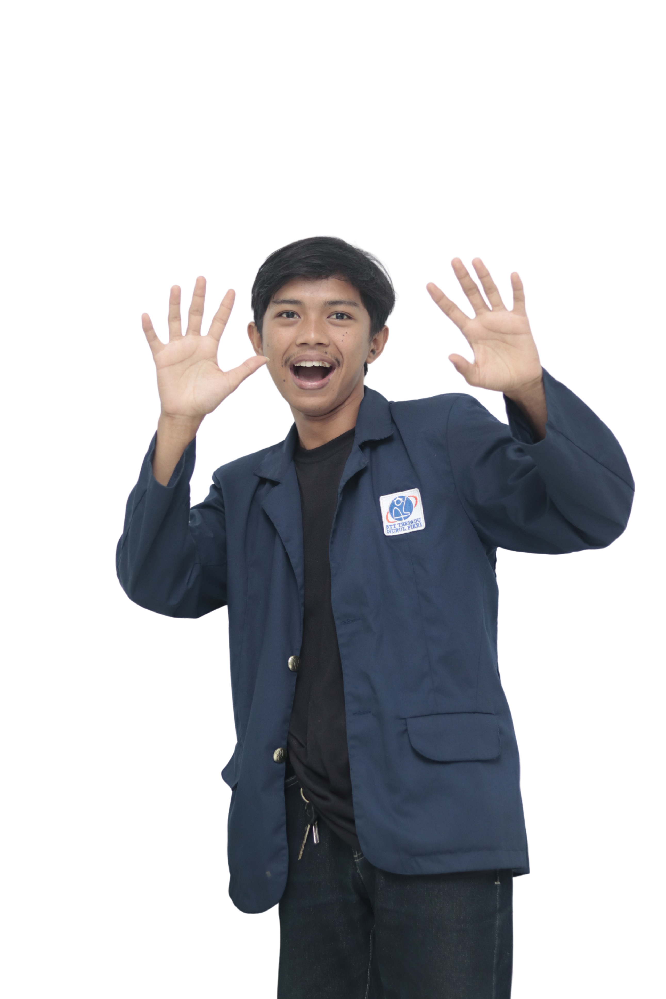

Curriculum Vitae

Biodata Pribadi
Nama
Muhammad Syahrul
Tempat, Tgl Lahir
Bogor, 25 Feb 2004
Jenis Kelamin
Laki-laki
Agama
Islam
Alamat
Bogor, Jawa Barat
Email
syahrulloji05@gmail.com
Telepon
0815-8489-6882
Kampus
STT Terpadu Nurul Fikri (STT-NF)
Pendidikan
S1 Teknik Informatika
— STT Terpadu Nurul Fikri (2022 – Sekarang)
SMK Ar-rum
— (2020 – 2023)
Pengalaman Organisasi
Staff BEM STT-NF
(2024 – 2025)
Mengelola kegiatan kemahasiswaan, menyusun event ASTRO FEST, serta koordinasi tim lapangan.
Ketua Panitia Futsal Competition
(2023)
Bertanggung jawab dalam perencanaan, pelaksanaan, dan evaluasi turnamen futsal tingkat sekolah.
Anggota OSIS SMK Ar-rum
(2021 – 2022)
Mengikuti kepengurusan OSIS, berperan dalam bidang olahraga dan kegiatan siswa.
Keterampilan
Manajemen Acara & Kepemimpinan
Komunikasi & Kerja Tim
Desain Presentasi (Canva)
Problem Solving
Hobi
Futsal
Fotografi
Membaca